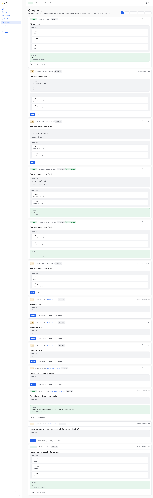

current_tool / current_intent не сбрасываются после завершения перехваченного tool call
После того, как реальная фикстура вызывает
AskUserQuestion, шим перехватывает, панель отвечает,
Claude возвращается в status=idle — поля
Current tool и Intent в карточке Fleet остаются
приколоченными к AskUserQuestion /
AskUserQuestion pending owner answer, бесконечно, пока
следующий tool call не перепишет их. Это НЕ клиентский кеш:
прямой curl /fleet возвращает те же строки.
Repro: запустить фикстуру, попросить её вызвать
AskUserQuestion, ответить через панель, дождаться
возврата Claude к промпту и:
curl -sf -H "Authorization: Bearer $TOK" http://127.0.0.1:7368/fleet \
| jq '.sessions[] | select(.name=="e2e03-c3") | {status, current_tool, current_intent}'
→ {"status":"idle","current_tool":"AskUserQuestion","current_intent":"AskUserQuestion pending owner answer"}.
Причина: tools/hooks/tool-observed-feed.sh вызывается
только из PreToolUse; нет парного PostToolUse-хука (или
шим-side reset), который бы записал null-observation после
завершения вопроса. Сравнить с run 02 m-3
(клиентский stale-лейбл) — фикс тронул лейбл, но источник данных
продолжает возвращать stale-значение.
Влияние на владельца: только косметика — карточка честно
переключается по status (busy → idle), а CURRENT
TOOL — это последний наблюдавшийся tool, что в каком-то смысле
полезная история. Но выглядит как «застряло».
